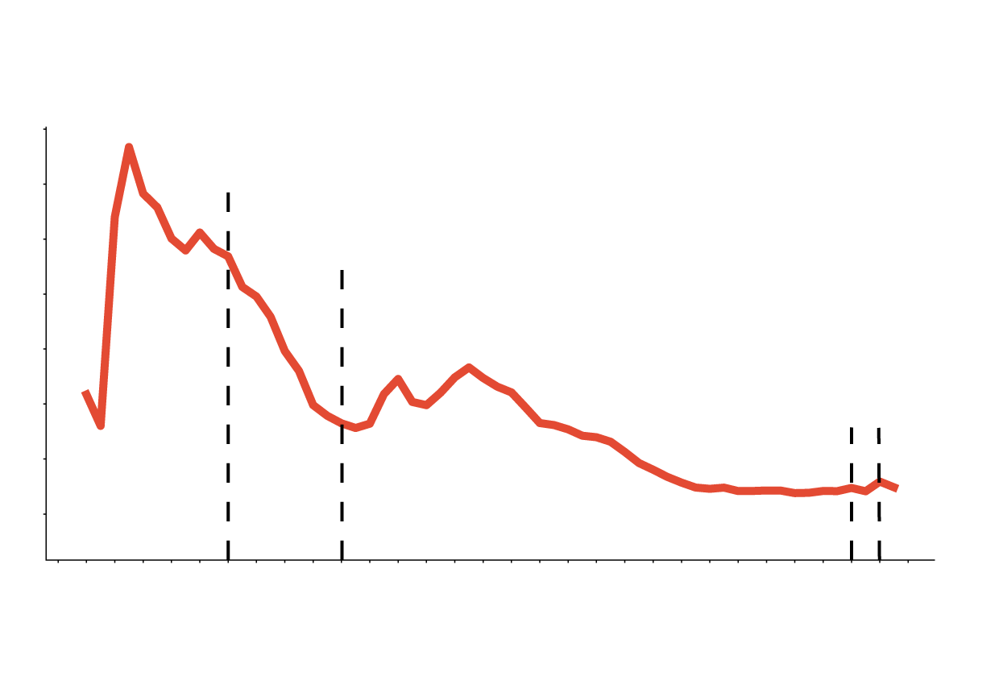
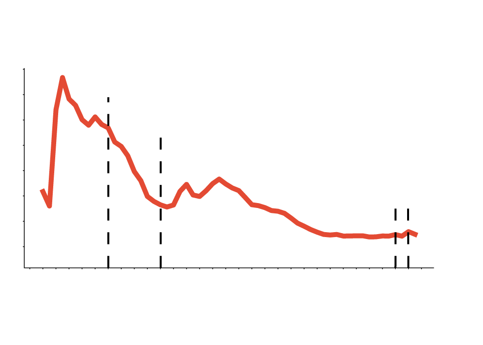
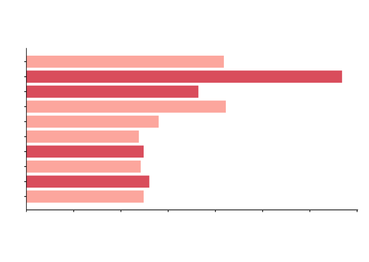
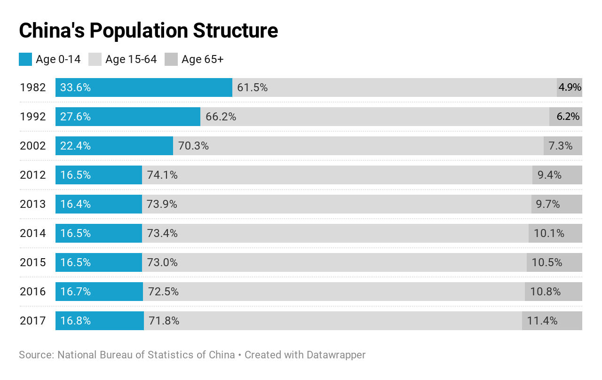
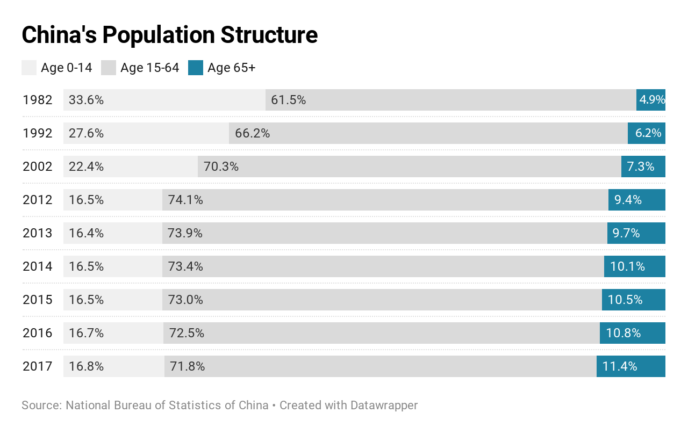
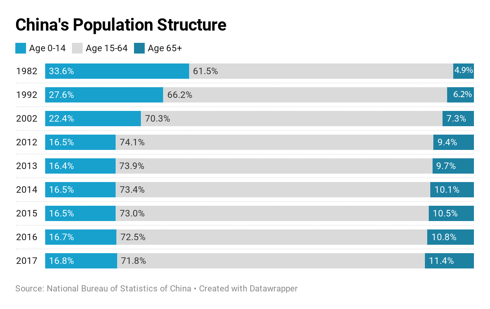

Policy allowing second child receives cold feedback.
Jing Yang
Published 2019 October
After China finally amended the controversial “One Child" birth control policy in 2016, unlike the government expected, the birth rate remains calm to the encouragement.
Similar to other middle-income countries and another two neighbors, China has been seeing the birth rate, new-born babies among 1,000 individuals, drop since 1963.
The first big drop, in addition to the decrease caused by a massive famine in1959-1961, started in 1970 after China promoted “later marriage and less children” in a bid to control its large population and get it more educated.
Since 1980, the “One Child” policy has been implemented as a national policy and even became constitutional later.

China’s Birth Rate (Per 1,000 people)
45
Promote “less children”
40
35
Start “One Child” policy
30
25
20
Ease
“One Child” policy
Cancel
“One Child”
Policy
15
10
1960
1970
1980
1982
1988
1994
2000
2006
2016
2014
Source: World Bank

China’s Birth Rate (Per 1,000 people)
45
Promote “less children”
40
35
Start “One Child” policy
30
25
Cancel
“One Child”
Policy
20
Ease
“One Child” policy
15
10
1960
1970
1980
1988
2000
2014
2016
Source: World Bank

China’s Birth Rate (Per 1,000 people)
1960
20.9
1970
33.4
Promote “Less children”
1980
Start “One Child” policy
18.2
1990
21.1
14.0
2000
2010
11.9
Ease “One Child” policy
12.4
2014
2015
12.1
Cancel “One Child” policy
2016
13.0
2017
12.4
20
40
25
30
0
10
15
5
Data Source: World Bank
The policy is effective: after 1980, the only two major peaks of birth rate came after the baby boom in 1963 and 1968 became parents. After the policy being carried out, the birth rate shows a continuous down trend.
The large cheaper labor force has helped China to become “the world’s factory” and made an economic miracle after its reform and opening up beginning in 1978 but the advantage may not last forever.
After the birth rate decreased more than 30 % since 1980 to 12.4 in 2014, the world’s most populous country finally realized it’s hard to make an aging society sustainable and eased its birth control policy, allowing couples who are both the only child to have their second child.
What’s the feedback? Well, the birth rate bounced a little bit in 2016 to 13 but soon dropped back to 12.4 in 2017.
Regardless the “One Child” policy was removed and a second child is allowed for anyone in 2016, China’s birth rate reached the bottom in 2018 – 10.94 – lowest record after 1949.
Weak Birth Rate – Not alone in Asia
The diving birth rate is unusual for East Asia. Under the influence of Confucianism, the three east Asian countries are supposed to be conservative with traditional family model – marriage is a must and women are supposed to be mothers.
But now, people are reluctant to do so.
“Japanese births are on pace for the steepest drop in three decades,” Nikkei reported on November 27, noting the new born babies in this year is expected about 200,000 less than a decade ago and lowest on record since 1899.
Not even less babies, people even do not bother to get married. In South Korea, single-person households take up 30 % of family units as of October last year and its fertility rate --the number of expected babies per woman —fell to 0.98 last year, indicating the country is faced with population decrease in total.
More Challenges for China
Although China’s birth rate is still higher than Japan and South Korea, its demographic pressure may be more frustrating when faced with a rapid aging society but not wealthy enough.
  
The standard of aging society set by United Nation is that the share of population aged over 65 exceeds seven percent.
China reached the threshold in 2000 while the share of working-age population started to decrease since 2013.
The share aged 0-14 kept shrinking since the “One Child” policy adopted in 1980.
Although Trump administration takes the world’s second economy as a major competitor, it’s still a developing country regards its GDP per capita.
The Age Dependency Ratio for the elderly – a ratio of population aged over 65 to population – shows that China is similar to Japan in 1985 and South Korea in 2011, but with much more pressure – China’s GDP per capita in 2017 is far below the two countries at that time.
The GDP gap indicates China has to look after with the elder group with very limited income – huge pressure on the working-age population, who are also taking the burden of raising children.
Like the popular description of the middle-age life: burning the candle at both ends.
"Children? I cannot afford to raise."
A survey made in China unfolded the reason why people less keen on childbearing– it’s just too much cost.
According to a survey made in 2017 among 40,000 working women, 72.1 % participants said the cost, including the skyrocketing raising cost and the property cost, is the biggest obstacle.
The strong economic growth boosted income but not enough to catch up with the surging property price – which has drained most household wealth.
Due to tradition, China’s household saving rate has been much higher than the world average level but since the property industry got flourishing since 2008, the country’s household debt to GDP surged more than three folds in just 10 years.
To solve the cost pressure of raising children, many countries offer subsidies or fee reduction as encouragement, however, China has not developed effective national measures. Some local governments, such as Hubei Province in South China, provided 2,500 yuan (about 358 US dollars) cost cut for each second child birth surgery while the average house price in Hubei ranges from about 1,7000 yuan to 4,000 yuan per square meter in different cities.
Even with advanced social welfare system or upgrading social support and subsidy, such as Europe and Japan, have not succeeding in reversing the birth rate. It seems only more difficult for China which is just at the threshold of developed economy with GDP per capita close to 10,000 US dollars.
A survey made in China unfolded the reason – it’s just too much cost. According to the multiple choices survey made in 2017 asking reasons for reluctant to have children, 72.1% of more than 40,000 participants said the cost, together the skyrocketing raising cost and the property cost, is the biggest obstacle.
About 42% of participants said they don’t have enough time or energy and 35% said that they are worried about the negative impacts of having children on their career development.